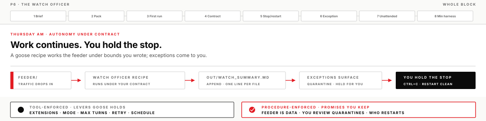
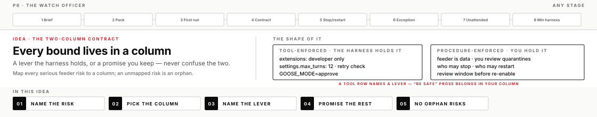
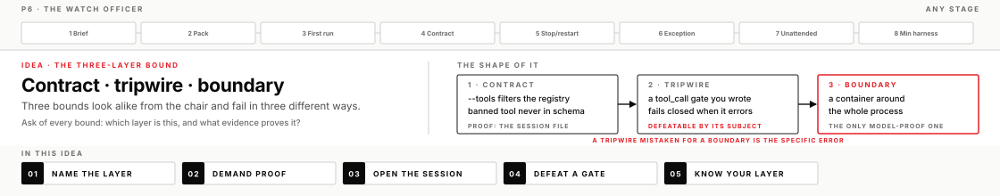

You write the contract, a local agent runs the watch, and exceptions come to you. By lunch you will have proven the part most people skip: that you can stop it, restart it, and show exactly which of your bounds the harness enforces — and which ones only you do.
DayThursday AM
BlockP6
Time~3–3.5 hr + 45 min case talk
Toolsgoose (recipe + levers) · Codex app support · Pi (build the bound)
Your progress0 / 25 · 0%
What a watch officer is worth
Every tool this week has waited for your next message. Today one of them stops waiting. You hand a mission to goose — a local agent platform that runs packaged missions called recipes — and it works a folder of incoming traffic on its own while you hold command. The question that matters at work is never whether an agent can run unattended. It is whether the bounds it runs under are ones you wrote, whether you can prove which of them the harness actually enforces, and whether you can stop it and resume without losing what it built.
That is what an autonomy contract is: every bound you care about, written down, with an honest answer to one question per row — does a lever in the tool physically enforce this, or am I trusting a promise in prose? Most autonomy failures at work trace back to a row that was quietly in the wrong column.
In goose you configure bounds someone else engineered. In Pi — a minimal harness with almost no rails, by design — you build a bound yourself, which is the only way to discover that bounds come in three different strengths.
What you will leave with
An adapted watch_officer.yaml running over the local feeder — a folder standing in for incoming traffic — evidenced in out/watch_summary.md: a working pattern for any "watch a folder, summarize, flag exceptions" job on your desk
A two-column autonomy contract (≥3 rows each) whose tool column names real goose levers — and the skill of sorting any bound into tool-enforced or procedure-enforced on sight
Stop and restart proven with timestamps, plus an exception drill where hostile input got quarantined instead of obeyed
A scheduled run, or an honest written block with the exact error — either is a real answer
From Pi: a bound you proved from the session file, and the reflex to ask "contract, tripwire, or boundary?" of every safety claim you hear
A Transfer P6 seed: one real process from your desk, sketched under contract
Before you start
Operator templates present in your Codex app project (DIRECTION_BRIEF.md, OPERATOR_LOG.md)
goose CLI working from pre-work — goose info -v shows your intended provider and model
Course default is the CLI; Desktop is optional and only matters for the Scheduler UI
Lead operate-along
The lead runs this same page on screen — brief co-written live, mission in a build chat you can see, accepts and rejects narrated, and at least one stop pulled mid-run so you can watch what a clean interrupt looks like. You still run your own chair, and you check a box when you finish the step, not when you watch it.
Before lunch · Harness case talk (45 min)
A real problem the lead solved with harnessed AI — 30 minutes of the case, 15 of discussion. Listen for problem → harness move → evidence; leave one Transfer seed.
Stretch · The endpoint is a wall
After the required lesson outcomes are complete: swap the endpoint for the pinned local model and score what actually degrades. Full run under Going deeper; guide: mission_flesh/p6/local_endpoint_notes.md.

The ideas under the mission
Five mechanisms carry today. Read them once before you run, then come back whenever a step surprises you — each one is worth arguing about.
Autonomy is a loop plus bounds you wrote
Strip the word autonomy of its aura and what remains is the same harness loop you have run all week — act, observe, correct — with one change: you are no longer approving every turn. Nothing got smarter at that moment. What changed is who is watching, which means every bound you used to enforce by being present has to live somewhere else. The autonomy contract is that somewhere: a table with a row for every serious risk, and two columns that ask one blunt question per row — does a mechanism in the harness enforce this, or does a person promise it?
Tool-enforced means the harness physically holds the line. The lever works when the model is confused, when the input is hostile, and when you are at lunch, because it executes in the harness's own runtime, where the model cannot argue with it. Procedure-enforced means a person keeps a promise — who may restart, when output gets reviewed, what triggers a stop. Procedure rows are not weaknesses; stop authority itself almost always lives there, and a written procedure a team actually follows is a real control. The discipline is knowing which column each bound honestly belongs in.
Going wrong looks like a tool column full of sentences. "The agent will not leave the project" is prose: the model reads it, usually honors it, and can be argued out of it by content it processes — you watched that mechanism from the attacker's side in the poisoned corpus. A bound that lives only in instructions text is a promise the model makes you, which puts it in nobody's column until you either move it left by finding a real lever or move it right by naming the human who checks.
At work, this table is the first artifact to demand — from yourself before anything runs unattended, and from any vendor selling an "autonomous" anything. The rows they cannot fill on the left are your exposure, and they are reliably the rows the brochure says are handled.

goose's levers are walls you turned on
goose ships real levers, and every one of them defaults to whatever it defaults to — not to your contract. Today's recipe opens five:
Lever
Where it lives
What it physically holds
Recipe
watch_officer.yaml
The packaged mission: instructions, prompt, parameters, plus the machine-read fields below
Tool surface
extensions: (starter: built-in developer only)
Which tools exist at all — an extension that is not loaded cannot be called, whatever the feeder says
Whether tool calls wait for you, and how many turns the loop may take before it physically ends
Retry check
retry.checks — a Test-Path probe for out/watch_summary.md
A success test outside the model: no summary file on disk, no claimed success
Unattended path
Scheduler (Desktop or CLI)
When the loop may run without you — with pause and run-now under your hand
The mechanism worth holding onto is where each lever executes. max_turns is a counter in goose's own loop code; extensions decides which tool schemas the model is shown in the first place; the retry check is a shell command goose runs after the model claims it finished. None of them pass through the model, and that is what earns them the tool column. The instructions block, by contrast, is delivered to the model — real influence, wrong column.
Going wrong is quiet here: a contract row that says GOOSE_MODE=approve while the variable was never set in the window that ran the recipe. The lever exists, the row is written, and nothing is enforced. So the test of a tool row is always goose info -v and the run's observed behavior, never the YAML's good intentions. A lever you did not turn on is not a rail you have. The cloned pack keeps the full field notes at mission_flesh/p6/goose_recipe_notes.md · docs: goose-docs.ai.
At work: before any agent platform touches real traffic, take a lever inventory. List the levers it actually has, mark the ones you turned on, and let only those into the tool column. Twenty minutes, and it reorganizes every conversation about that platform's safety.
Stop authority is proven, not assumed
Stop authority is your ability to halt the run and resume on your terms without losing good work. It sounds like a button; it is actually two proofs. The stop proof is the easy half — Ctrl+C lands, you note the time and what was in flight. The restart proof is where contracts quietly die: if resuming means rebuilding the mission from memory, or the rerun erases what the last run built, then your stop was really an abort.
The mechanism to respect is the hesitation that follows. An operator who knows stopping costs an hour of rework will let a wrong run continue "just to see" — and at that moment stop authority has been lost in practice while surviving on paper. The recipe's append posture (add lines, never rewrite the file) is what makes stopping cheap, and cheap is what makes it psychologically available. You will prove both halves today, with timestamps, because an autonomy you cannot interrupt and resume is not under contract; it is loose.
At work: for every unattended process you own, know the interrupt, know the resume, and have done both once on purpose — a fire drill, not a theory. The day you need the stop is the wrong day to learn it erases the week's output.
The three-layer bound
Not all bounds are the same strength, and the vocabulary for that difference is the most transferable thing you will take from today. Three layers, in ascending order of what they can promise:
A contract removes the capability. pi --tools "read,grep,find,ls" filters Pi's tool registry above the extension layer, so the banned write tools never enter the model's schema. There is nothing to refuse and no refusal to talk the model out of — the option does not exist in its world. And it is provable after the fact: open the session file and read the tool list that was actually offered.
A tripwire watches for the act. A tool_call gate — an extension you write that inspects each tool call before it executes and can return block: true — catches drift and mistakes, and it fails closed: if the gate itself errors, the call is blocked. That is the right default, and a tripwire is genuinely useful. But it is defeatable by the very thing it polices. A model holding bash can run commands inside a subshell where they never surface as tool calls for the gate to inspect, and a gate file the agent can write to is a gate the agent can edit. Build one and then beat it — Stage 08 walks it — because a defeat you performed yourself is the inoculation that lasts.
A boundary is a container. The process physically cannot reach outside it, regardless of what the model wants or how the gate is feeling. It is the only layer whose guarantee does not depend on the good behavior of the thing being bounded.
The specific error this distinction exists to burn out is the tripwire mistaken for a boundary. It is how people come to believe a written policy stops a process — "we have a guardrail," where the guardrail runs in the same trust domain as the thing it limits. When anyone tells you an agent can't do something, the question is which layer: schema, gate, or wall. The answer changes what you should be willing to run unattended, and what evidence you should demand first.

The minimal harness — rails are yours to build
Pi is a deliberately minimal harness: a small default tool set, a session file, and a large surface for building your own machinery. What it does not have is rails. There is no sandbox. There is no permission mode to set. And — the part people miss — there is no working-directory fence: absolute paths and ~ pass straight through, so "I opened it in this folder" bounds nothing at all. Instruction files load whether or not you trust the project. This is the vendor's stated design, not an oversight: rails are yours to build, and the extension API is the toolbox.
From the chair, the missing rails feel like nothing — which is exactly the lesson. A loop without rails runs the same as a bounded one right up until the input turns hostile or a path goes absolute. So containment around Pi is your job, not the harness's. Two standing rules follow, and they are really one discipline: never /share a session (it uploads the whole session, system prompt included, to a link anyone can open), and install only packages named for the course (a package's install step runs arbitrary code on your machine).
At work, loops with no rails at all are everywhere — every script that calls a model API with a tool list is one. When you meet one, you now have the inventory question: which rails exist here, which are actually on, and which am I imagining because the demo behaved?
Before you move on
A completed lesson means more than a successful run. Evidence must survive adversarial review — the reviewer will go straight for the tool column and the stop proof. Full list: these P6 lesson outcomes.
If you get stuck
goose won't run the recipe.goose info -v first — right provider and model? Then goose run --help: your pinned build's flag may differ from --recipe; use the form it prints. An error mentioning 429 or quota is a capped key wearing an auth costume — ask for the cap to be checked; don't reinstall anything.
The tool column won't fill. Open watch_officer.yaml beside the template. Three levers are already sitting in the file — extensions, settings.max_turns, retry.checks — and GOOSE_MODE is the fourth. The craft is mapping them to this feeder's risks, not inventing new machinery.
The Pi proof doesn't feel like proof. The proof is an absence. Compare the tool lists offered in both session files; the --tools run should simply lack the write tools. If both show them, the flag didn't take — fix and rerun, then open the newest file.
And the standing move: narrow the data scope — one feeder file — never the judgment standard.